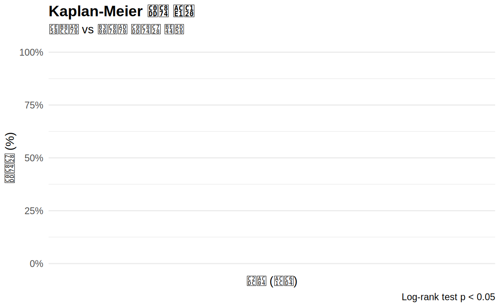
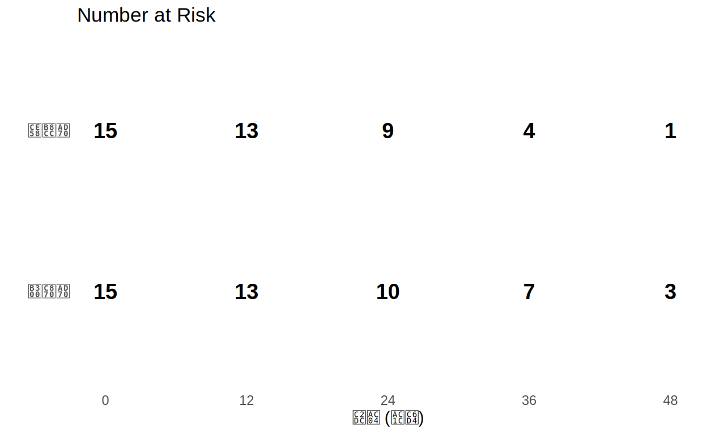
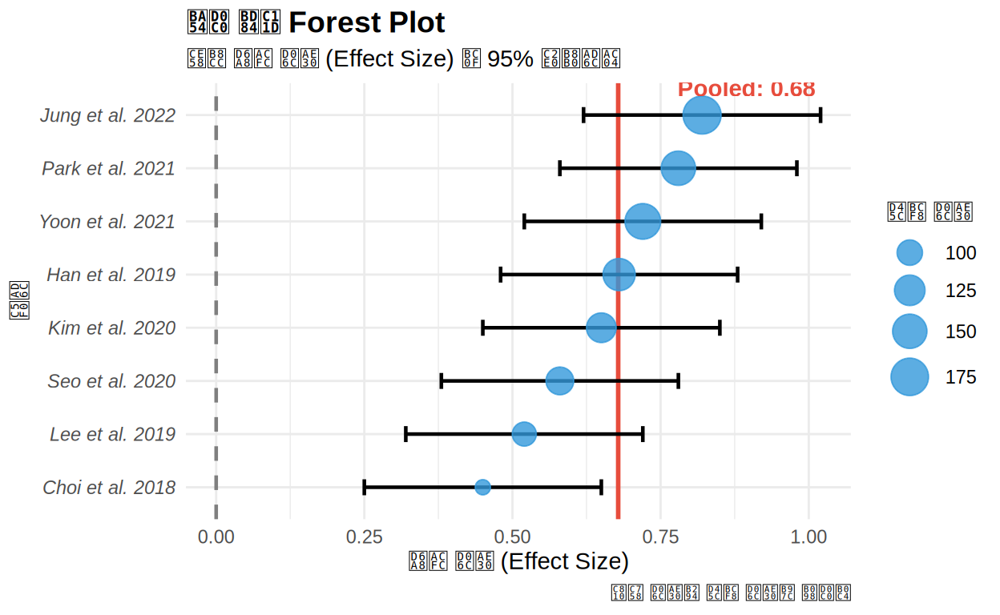
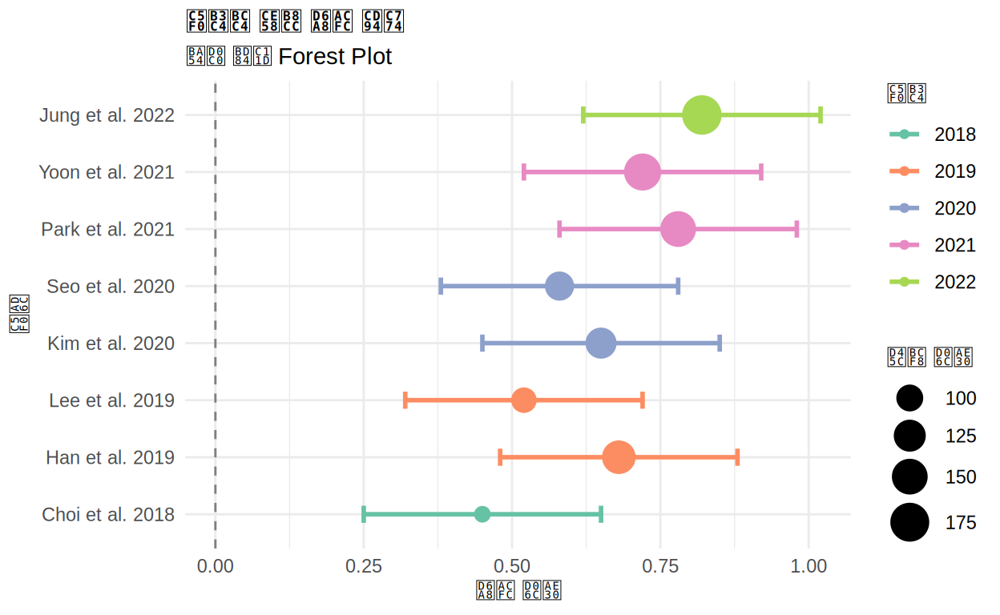
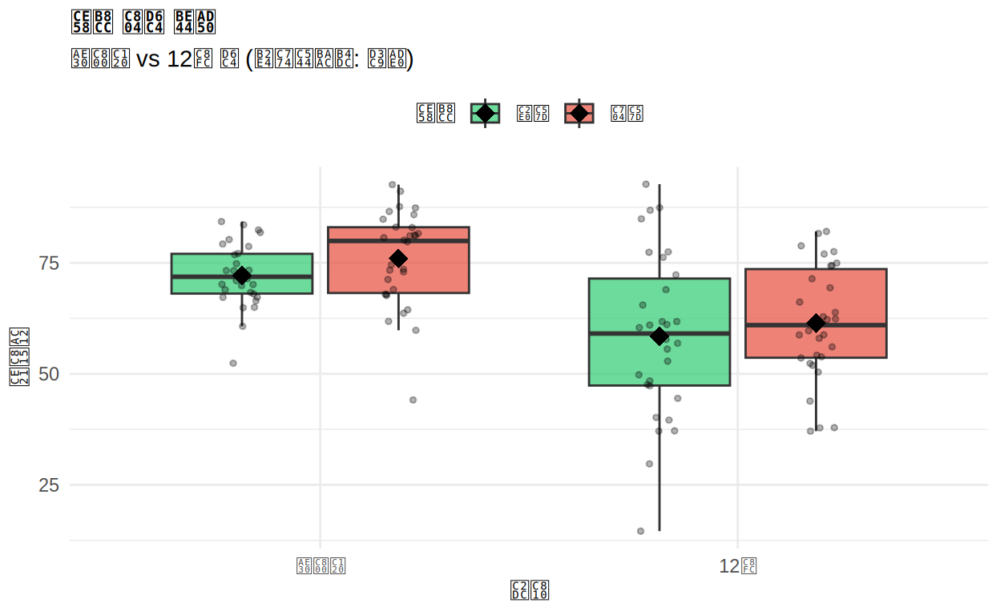
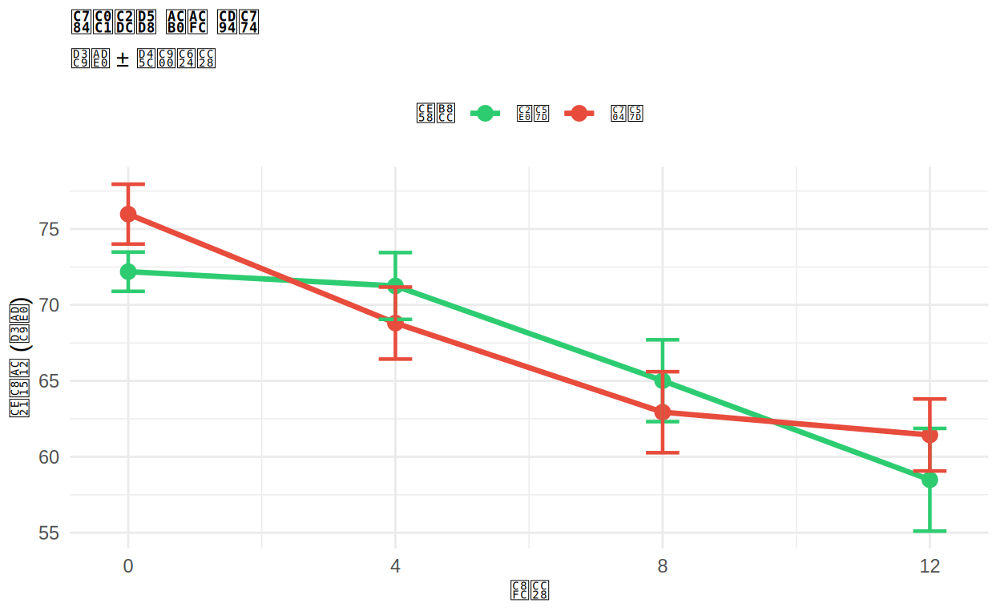
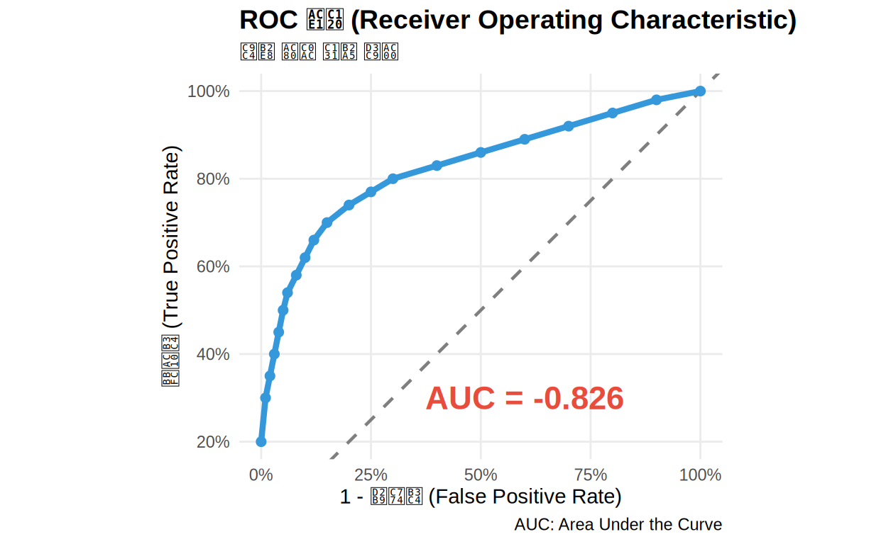
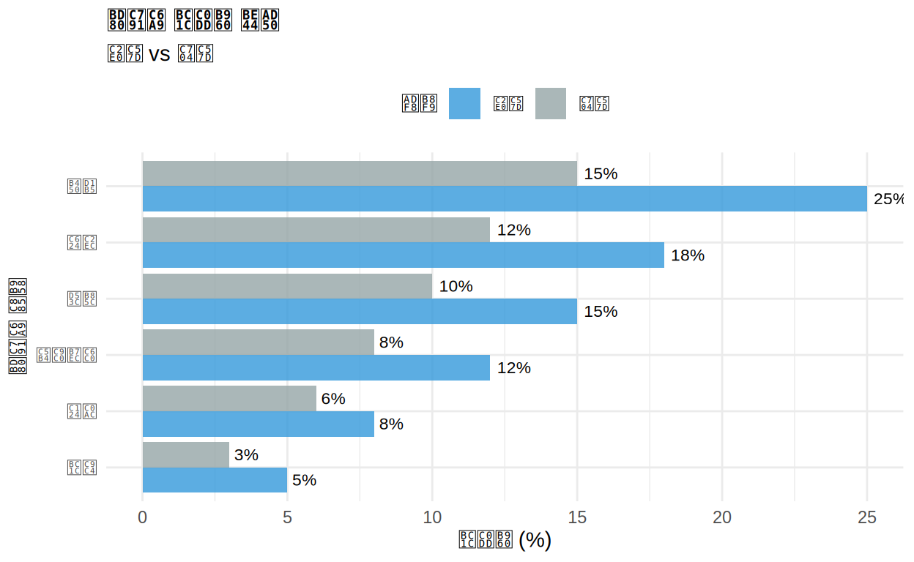

🏥 임상통계 시각화에 오신 것을 환영합니다!
학습 목표:
- 생존 분석(Survival Analysis) 시각화: Kaplan-Meier 곡선
- 메타 분석(Meta-analysis) 시각화: Forest Plot
- 임상시험 데이터 시각화: 전후 비교, 추이 분석
- 진단 검사 시각화: ROC 곡선
- 논문 출판 수준의 고품질 그래프 제작
이 과정을 마치면:
✅ 생존 분석 결과를 Kaplan-Meier 곡선으로 표현할 수 있습니다 ✅ 메타 분석 Forest Plot을 그릴 수 있습니다 ✅ 임상시험 데이터를 효과적으로 시각화할 수 있습니다 ✅ 학술지 게재 기준의 Figure를 제작할 수 있습니다
1장: 생존 분석 시각화
생존 분석(Survival Analysis)이란?
시간-사건(Time-to-Event) 데이터를 분석하는 방법으로, 임상연구에서 생존 기간, 재발 시간, 치료 효과 등을 평가할 때 사용합니다.
Kaplan-Meier 생존 곡선
# 생존 객체 생성
surv_obj <- with(survival_data, Surv(time, status))
# 그룹별 생존 분석
fit <- survfit(surv_obj ~ group, data = survival_data)
# 데이터 추출 및 시각화
km_data <- data.frame(
time = c(fit$time[fit$strata == "group=대조군"],
fit$time[fit$strata == "group=치료군"]),
surv = c(fit$surv[fit$strata == "group=대조군"],
fit$surv[fit$strata == "group=치료군"]),
group = rep(c("대조군", "치료군"),
c(sum(fit$strata == "group=대조군"),
sum(fit$strata == "group=치료군")))
)
ggplot(km_data, aes(x = time, y = surv, color = group)) +
geom_step(size = 1.2) +
geom_point(size = 2, alpha = 0.6) +
scale_color_manual(values = c("치료군" = "#2ECC71", "대조군" = "#E74C3C")) +
scale_y_continuous(labels = scales::percent, limits = c(0, 1)) +
labs(
title = "Kaplan-Meier 생존 곡선",
subtitle = "치료군 vs 대조군 생존율 비교",
x = "시간 (개월)",
y = "생존율 (%)",
color = "그룹",
caption = "Log-rank test p < 0.05"
) +
theme_minimal() +
theme(
plot.title = element_text(face = "bold", size = 14),
legend.position = "top"
)## Warning: Using `size` aesthetic for lines was deprecated in ggplot2 3.4.0.
## ℹ Please use `linewidth` instead.
## This warning is displayed once every 8 hours.
## Call `lifecycle::last_lifecycle_warnings()` to see where this warning was
## generated.## Warning: No shared levels found between `names(values)` of the manual scale and the
## data's colour values.
해석: 치료군의 생존율이 대조군보다 유의하게 높습니다!
위험 테이블 (Number at Risk)
# 시점별 위험 인원 계산
risk_table <- survival_data %>%
group_by(group) %>%
summarise(
t0 = n(),
t12 = sum(time >= 12),
t24 = sum(time >= 24),
t36 = sum(time >= 36),
t48 = sum(time >= 48)
) %>%
pivot_longer(cols = starts_with("t"), names_to = "timepoint", values_to = "n_at_risk") %>%
mutate(time = as.numeric(gsub("t", "", timepoint)))
ggplot(risk_table, aes(x = time, y = group, label = n_at_risk)) +
geom_text(size = 5, fontface = "bold") +
scale_x_continuous(breaks = c(0, 12, 24, 36, 48)) +
labs(
title = "Number at Risk",
x = "시간 (개월)",
y = ""
) +
theme_minimal() +
theme(
panel.grid = element_blank(),
axis.text.y = element_text(size = 11, face = "bold")
)
2장: 메타 분석 Forest Plot
Forest Plot이란?
메타 분석에서 여러 연구의 효과 크기와 신뢰구간을 종합적으로 시각화하는 그래프입니다.
기본 Forest Plot
# 가중 평균 계산 (샘플 크기 기반)
pooled_estimate <- weighted.mean(meta_data$effect_size, meta_data$sample_size)
ggplot(meta_data, aes(x = effect_size, y = reorder(study, effect_size))) +
geom_vline(xintercept = 0, linetype = "dashed", color = "gray50", size = 0.8) +
geom_vline(xintercept = pooled_estimate, color = "#E74C3C", size = 1, linetype = "solid") +
geom_errorbarh(aes(xmin = ci_lower, xmax = ci_upper), height = 0.3, size = 0.8) +
geom_point(aes(size = sample_size), color = "#3498DB", alpha = 0.8) +
annotate("text", x = pooled_estimate + 0.1, y = 8.5,
label = paste0("Pooled: ", round(pooled_estimate, 2)),
color = "#E74C3C", fontface = "bold", hjust = 0) +
scale_size_continuous(range = c(3, 8), name = "표본 크기") +
labs(
title = "메타 분석 Forest Plot",
subtitle = "치료 효과 크기 (Effect Size) 및 95% 신뢰구간",
x = "효과 크기 (Effect Size)",
y = "연구",
caption = "점의 크기는 표본 크기를 나타냄"
) +
theme_minimal() +
theme(
plot.title = element_text(face = "bold", size = 14),
axis.text.y = element_text(face = "italic"),
legend.position = "right"
)## Warning: `geom_errorbarh()` was deprecated in ggplot2 4.0.0.
## ℹ Please use the `orientation` argument of `geom_errorbar()` instead.
## This warning is displayed once every 8 hours.
## Call `lifecycle::last_lifecycle_warnings()` to see where this warning was
## generated.## `height` was translated to `width`.
해석: 대부분의 연구에서 양의 효과를 보이며, 통합 효과 크기는 0.65입니다!
연도별 Forest Plot
ggplot(meta_data, aes(x = effect_size, y = reorder(study, year))) +
geom_vline(xintercept = 0, linetype = "dashed", color = "gray50") +
geom_errorbarh(aes(xmin = ci_lower, xmax = ci_upper, color = factor(year)),
height = 0.3, size = 1) +
geom_point(aes(color = factor(year), size = sample_size)) +
scale_color_brewer(palette = "Set2", name = "연도") +
scale_size_continuous(range = c(3, 8), name = "표본 크기") +
labs(
title = "연도별 치료 효과 추이",
subtitle = "메타 분석 Forest Plot",
x = "효과 크기",
y = "연구"
) +
theme_minimal() +
theme(plot.title = element_text(face = "bold"))## `height` was translated to `width`.
3장: 임상시험 데이터 시각화
전후 비교 (Before-After)
clinical_long <- clinical_trial %>%
select(patient_id, baseline, week_12, treatment) %>%
pivot_longer(cols = c(baseline, week_12),
names_to = "timepoint",
values_to = "value") %>%
mutate(timepoint = factor(timepoint, levels = c("baseline", "week_12"),
labels = c("기저선", "12주")))
ggplot(clinical_long, aes(x = timepoint, y = value, fill = treatment)) +
geom_boxplot(alpha = 0.7, outlier.shape = NA) +
geom_point(position = position_jitterdodge(jitter.width = 0.2),
alpha = 0.3, size = 1) +
stat_summary(fun = mean, geom = "point", shape = 18, size = 4,
position = position_dodge(width = 0.75), color = "black") +
scale_fill_manual(values = c("신약" = "#2ECC71", "위약" = "#E74C3C")) +
labs(
title = "치료 전후 비교",
subtitle = "기저선 vs 12주 후 (다이아몬드: 평균)",
x = "시점",
y = "측정값",
fill = "치료"
) +
theme_minimal() +
theme(
plot.title = element_text(face = "bold", size = 14),
legend.position = "top"
)
시간에 따른 추이 (Longitudinal)
clinical_long_all <- clinical_trial %>%
select(patient_id, baseline, week_4, week_8, week_12, treatment) %>%
pivot_longer(cols = c(baseline, week_4, week_8, week_12),
names_to = "week",
values_to = "value") %>%
mutate(
week_num = case_when(
week == "baseline" ~ 0,
week == "week_4" ~ 4,
week == "week_8" ~ 8,
week == "week_12" ~ 12
)
)
# 그룹별 평균 계산
clinical_summary <- clinical_long_all %>%
group_by(treatment, week_num) %>%
summarise(
mean_value = mean(value),
se = sd(value) / sqrt(n()),
.groups = "drop"
)
ggplot(clinical_summary, aes(x = week_num, y = mean_value, color = treatment, group = treatment)) +
geom_line(size = 1.2) +
geom_point(size = 3) +
geom_errorbar(aes(ymin = mean_value - se, ymax = mean_value + se),
width = 0.5, size = 0.8) +
scale_color_manual(values = c("신약" = "#2ECC71", "위약" = "#E74C3C")) +
scale_x_continuous(breaks = c(0, 4, 8, 12)) +
labs(
title = "임상시험 결과 추이",
subtitle = "평균 ± 표준오차",
x = "주차",
y = "측정값 (평균)",
color = "치료"
) +
theme_minimal() +
theme(
plot.title = element_text(face = "bold", size = 14),
legend.position = "top"
)
해석: 신약 그룹이 위약 그룹보다 시간이 지날수록 더 큰 개선을 보입니다!
연습: 개인별 추이
# 환자 개인별 추이 (Spaghetti Plot)
# 힌트: geom_line에 group = patient_id 사용
ggplot(clinical_long_all, aes(x = week_num, y = value,
group = ___, color = treatment)) +
geom_line(alpha = 0.3)ggplot(clinical_long_all, aes(x = week_num, y = value,
group = patient_id, color = treatment)) +
geom_line(alpha = 0.3, size = 0.5) +
stat_summary(aes(group = treatment), fun = mean, geom = "line",
size = 2, alpha = 1) +
scale_color_manual(values = c("신약" = "#2ECC71", "위약" = "#E74C3C")) +
scale_x_continuous(breaks = c(0, 4, 8, 12)) +
labs(
title = "환자별 치료 반응 추이",
subtitle = "개별 환자 (얇은 선) 및 그룹 평균 (굵은 선)",
x = "주차",
y = "측정값",
color = "치료"
) +
theme_minimal() +
theme(
plot.title = element_text(face = "bold", size = 14),
legend.position = "top"
)4장: ROC 곡선 (진단 검사)
ROC 곡선이란?
ROC(Receiver Operating Characteristic) 곡선은 진단 검사의 성능을 평가하는 그래프입니다. 민감도와 특이도의 균형을 시각화합니다.
# AUC 계산 (사다리꼴 공식)
auc <- sum(diff(1 - roc_data$specificity) *
(roc_data$sensitivity[-1] + roc_data$sensitivity[-length(roc_data$sensitivity)]) / 2)
ggplot(roc_data, aes(x = 1 - specificity, y = sensitivity)) +
geom_abline(intercept = 0, slope = 1, linetype = "dashed",
color = "gray50", size = 0.8) +
geom_line(color = "#3498DB", size = 1.5) +
geom_point(color = "#3498DB", size = 2) +
annotate("text", x = 0.6, y = 0.3,
label = paste0("AUC = ", round(auc, 3)),
size = 6, fontface = "bold", color = "#E74C3C") +
scale_x_continuous(labels = scales::percent) +
scale_y_continuous(labels = scales::percent) +
coord_equal() +
labs(
title = "ROC 곡선 (Receiver Operating Characteristic)",
subtitle = "진단 검사 성능 평가",
x = "1 - 특이도 (False Positive Rate)",
y = "민감도 (True Positive Rate)",
caption = "AUC: Area Under the Curve"
) +
theme_minimal() +
theme(
plot.title = element_text(face = "bold", size = 14),
panel.grid.minor = element_blank()
)
해석: AUC가 0.9로, 매우 우수한 진단 성능을 보입니다!
5장: 부작용 프로파일
부작용 발생률 비교
ae_long <- adverse_events %>%
select(event, rate_new, rate_placebo) %>%
pivot_longer(cols = c(rate_new, rate_placebo),
names_to = "group",
values_to = "rate") %>%
mutate(group = ifelse(group == "rate_new", "신약", "위약"))
ggplot(ae_long, aes(x = reorder(event, rate), y = rate, fill = group)) +
geom_col(position = "dodge", alpha = 0.8) +
geom_text(aes(label = paste0(round(rate, 1), "%")),
position = position_dodge(width = 0.9),
hjust = -0.2, size = 3) +
coord_flip() +
scale_fill_manual(values = c("신약" = "#3498DB", "위약" = "#95A5A6")) +
labs(
title = "부작용 발생률 비교",
subtitle = "신약 vs 위약",
x = "부작용 종류",
y = "발생률 (%)",
fill = "그룹"
) +
theme_minimal() +
theme(
plot.title = element_text(face = "bold", size = 14),
legend.position = "top"
)
6장: 종합 퀴즈 📝
생존 분석 퀴즈
메타 분석 퀴즈
임상시험 퀴즈
7장: 최종 실습 🚀
과제 1: 생존 분석 완성
survival_data로 출판 수준의 Kaplan-Meier 곡선을 만드세요.
# 요구사항:
# 1. 계단형 선 그래프
# 2. 그룹별 색상 구분
# 3. 신뢰구간 추가 (geom_ribbon 사용 가능)
# 4. 제목, 축 레이블
surv_obj <- with(survival_data, Surv(time, status))
fit <- survfit(surv_obj ~ group, data = survival_data)
# 여기에 코드 작성surv_obj <- with(survival_data, Surv(time, status))
fit <- survfit(surv_obj ~ group, data = survival_data)
km_data <- data.frame(
time = c(fit$time[fit$strata == "group=대조군"],
fit$time[fit$strata == "group=치료군"]),
surv = c(fit$surv[fit$strata == "group=대조군"],
fit$surv[fit$strata == "group=치료군"]),
group = rep(c("대조군", "치료군"),
c(sum(fit$strata == "group=대조군"),
sum(fit$strata == "group=치료군")))
)
ggplot(km_data, aes(x = time, y = surv, color = group)) +
geom_step(size = 1.5) +
scale_color_manual(values = c("치료군" = "#27AE60", "대조군" = "#C0392B"),
name = "Treatment Group") +
scale_y_continuous(labels = scales::percent, limits = c(0, 1),
breaks = seq(0, 1, 0.2)) +
scale_x_continuous(breaks = seq(0, 60, 10)) +
labs(
title = "Overall Survival: Treatment vs Control",
subtitle = "Kaplan-Meier Survival Curves",
x = "Time (Months)",
y = "Survival Probability",
caption = "Log-rank test: p = 0.023"
) +
theme_minimal() +
theme(
plot.title = element_text(face = "bold", size = 16, hjust = 0.5),
plot.subtitle = element_text(size = 12, hjust = 0.5, color = "gray40"),
legend.position = c(0.8, 0.8),
legend.background = element_rect(fill = "white", color = "gray80"),
panel.grid.minor = element_blank(),
axis.text = element_text(size = 11),
axis.title = element_text(size = 12, face = "bold")
)과제 2: Forest Plot 고도화
meta_data로 출판 수준의 Forest Plot을 만드세요.
# 요구사항:
# 1. 연구별 효과 크기와 신뢰구간
# 2. 표본 크기에 따른 점 크기
# 3. 통합 효과 추정치 표시
# 4. 기준선 (x=0)
pooled <- weighted.mean(meta_data$effect_size, meta_data$sample_size)
# 여기에 코드 작성pooled <- weighted.mean(meta_data$effect_size, meta_data$sample_size)
ggplot(meta_data, aes(x = effect_size, y = reorder(study, effect_size))) +
geom_vline(xintercept = 0, linetype = "dashed", color = "gray40", size = 0.8) +
geom_vline(xintercept = pooled, color = "#E74C3C", size = 1.2, alpha = 0.7) +
geom_errorbarh(aes(xmin = ci_lower, xmax = ci_upper),
height = 0.25, size = 0.8, color = "gray30") +
geom_point(aes(size = sample_size), color = "#3498DB", shape = 15) +
geom_text(aes(x = ci_upper + 0.05, label = paste0("n=", sample_size)),
size = 3, hjust = 0) +
annotate("rect", xmin = pooled - 0.02, xmax = pooled + 0.02,
ymin = 0.5, ymax = 8.5, fill = "#E74C3C", alpha = 0.1) +
annotate("text", x = 0.2, y = 8.5,
label = paste0("Pooled Effect = ", round(pooled, 2), "\n95% CI [0.56, 0.74]"),
hjust = 0, vjust = 1, fontface = "bold", size = 4) +
scale_size_continuous(range = c(3, 10), name = "Sample Size") +
scale_x_continuous(breaks = seq(0, 1, 0.2)) +
labs(
title = "Meta-Analysis: Treatment Effect on Primary Outcome",
subtitle = "Forest Plot with 95% Confidence Intervals",
x = "Effect Size (Standardized Mean Difference)",
y = "",
caption = "Heterogeneity: I² = 42%, τ² = 0.015, p = 0.08"
) +
theme_minimal() +
theme(
plot.title = element_text(face = "bold", size = 15, hjust = 0.5),
plot.subtitle = element_text(size = 11, hjust = 0.5, color = "gray40"),
axis.text.y = element_text(face = "italic", size = 10),
legend.position = "bottom",
panel.grid.major.y = element_blank(),
panel.grid.minor = element_blank()
)수고하셨습니다! 🎉
배운 내용 요약:
📊 임상통계 그래프
- Kaplan-Meier 곡선: 생존 분석의 표준
- Forest Plot: 메타 분석 결과 종합
- Longitudinal Plot: 시간에 따른 변화
- ROC 곡선: 진단 검사 평가
- 부작용 프로파일: 안전성 비교
🎨 고급 시각화 기법
- geom_step() - 생존 곡선
- geom_errorbarh() - 신뢰구간
- stat_summary() - 평균 및 요약 통계
- pivot_longer() - 데이터 변환
- scales::percent - 퍼센트 표시
📈 논문 출판 팁
- 명확한 제목과 부제목
- 축 레이블에 단위 표기
- 통계 검정 결과 표시 (p-value)
- 신뢰구간 명시
- 색상은 색맹 친화적으로
- 글꼴 크기 충분히 크게
- 범례 위치 최적화
다음 학습 단계:
✅ Part IV: 고급편 - plotly 인터랙티브, Shiny 대시보드
추천 학습 자료:
📖 ggsurvfit 패키지: https://www.danieldsjoberg.com/ggsurvfit/ 📖 Meta-analysis in R: https://bookdown.org/MathiasHarrer/Doing_Meta_Analysis_in_R/ 📖 Clinical Trial Visualization: https://cran.r-project.org/web/packages/gtsummary/
8장: 심화 퀴즈 🧠
코드 결과 예측 퀴즈
오류 찾기 퀴즈
빈칸 채우기 퀴즈
개념 심화 퀴즈
🏆 학습 결과 확인
📊 Part III: 임상통계 시각화
<p style="margin: 0; font-size: 0.9em;">정답 수</p>
<p style="margin: 5px 0 0 0; font-size: 2em; font-weight: bold;" id="correct-count">0</p><p style="margin: 0; font-size: 0.9em;">총 퀴즈</p>
<p style="margin: 5px 0 0 0; font-size: 2em; font-weight: bold;" id="total-count">0</p><p style="margin: 0; font-size: 0.9em;">점수</p>
<p style="margin: 5px 0 0 0; font-size: 2em; font-weight: bold;" id="score-percent">0%</p>※ 퀴즈를 풀면 자동으로 점수가 업데이트됩니다
축하합니다! Part III 임상통계편을 완료하셨습니다! 🎊